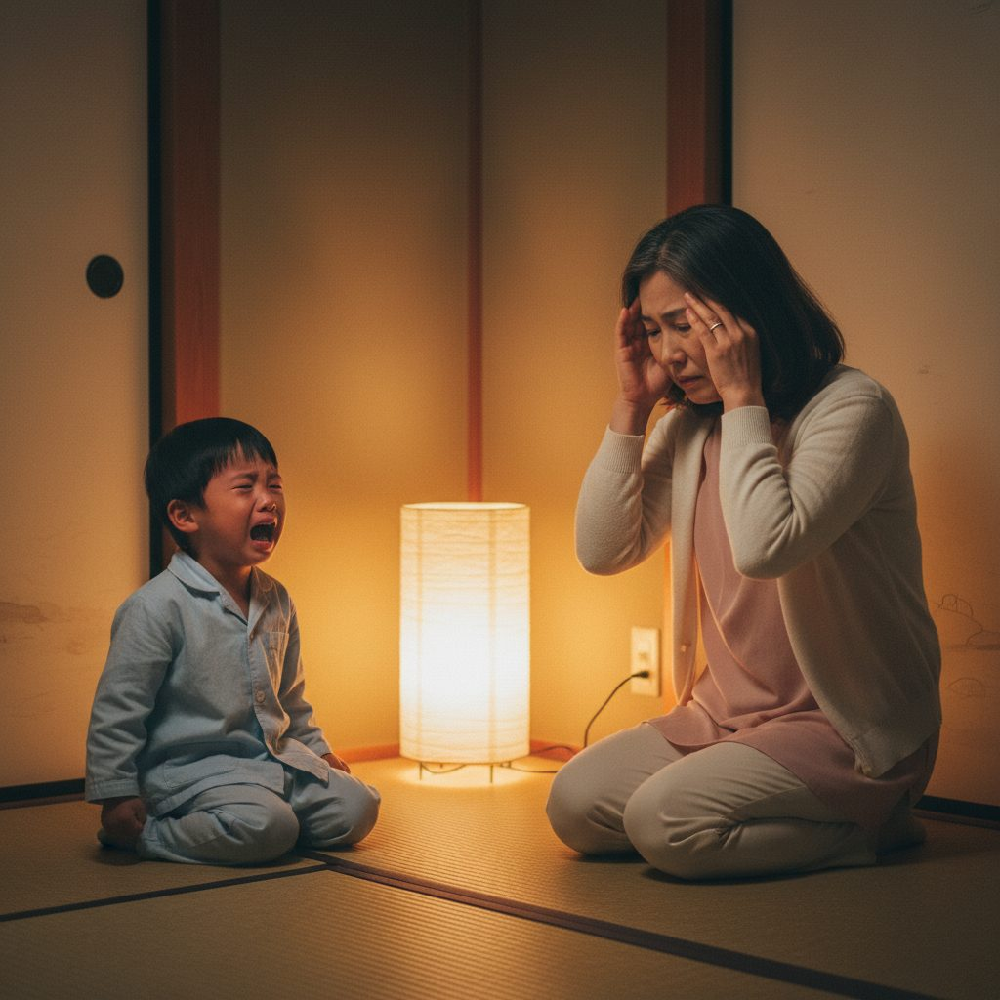
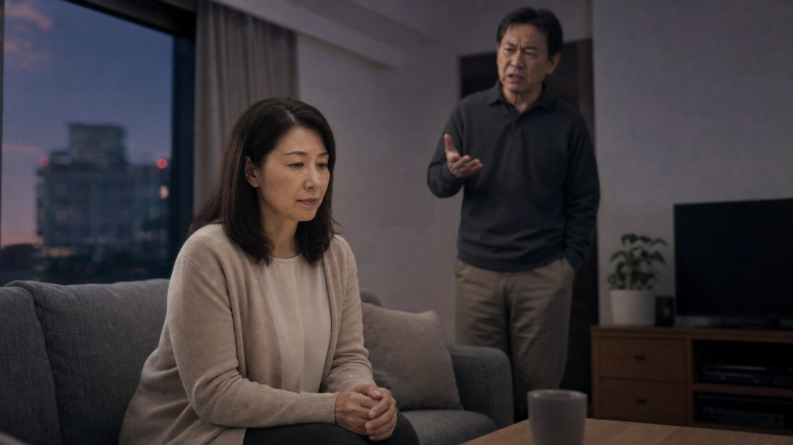
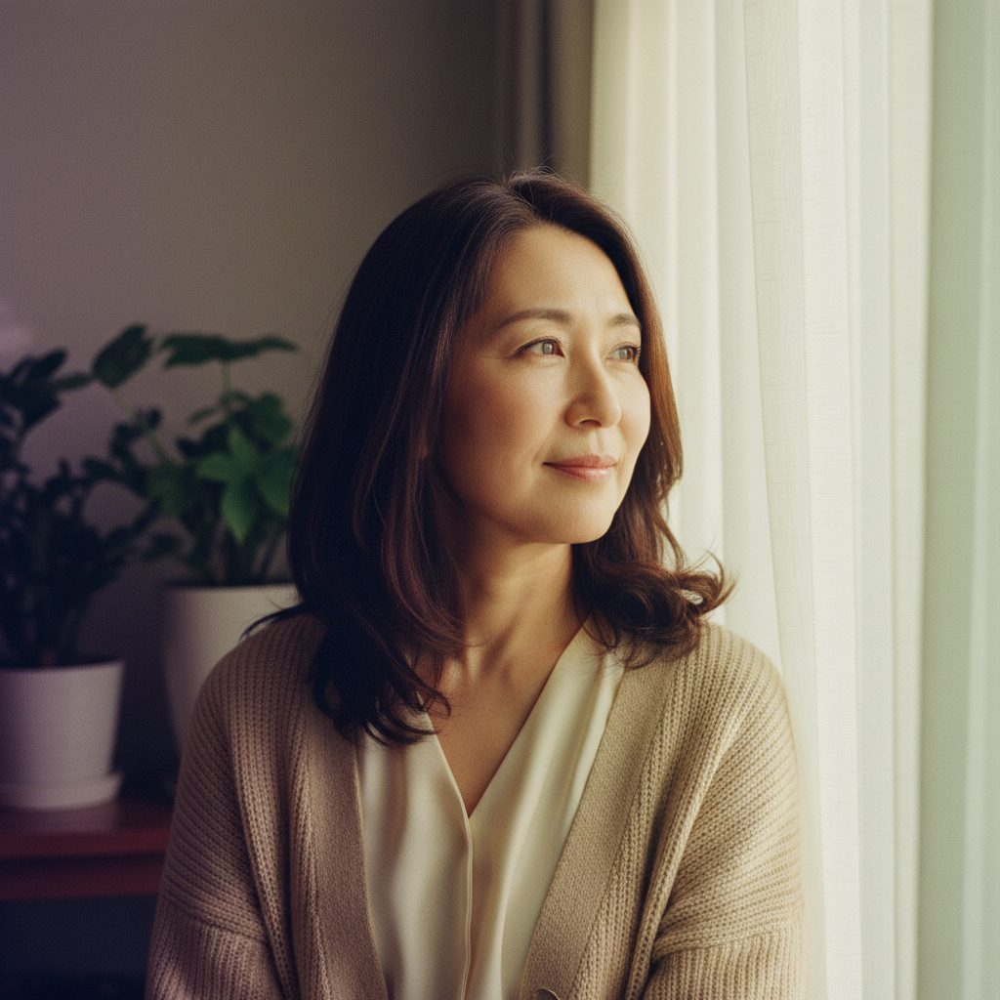
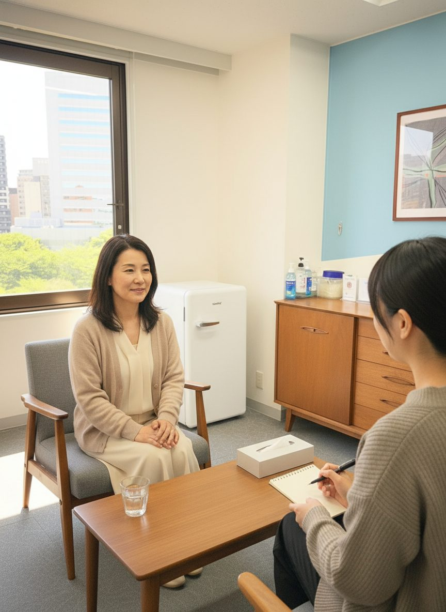
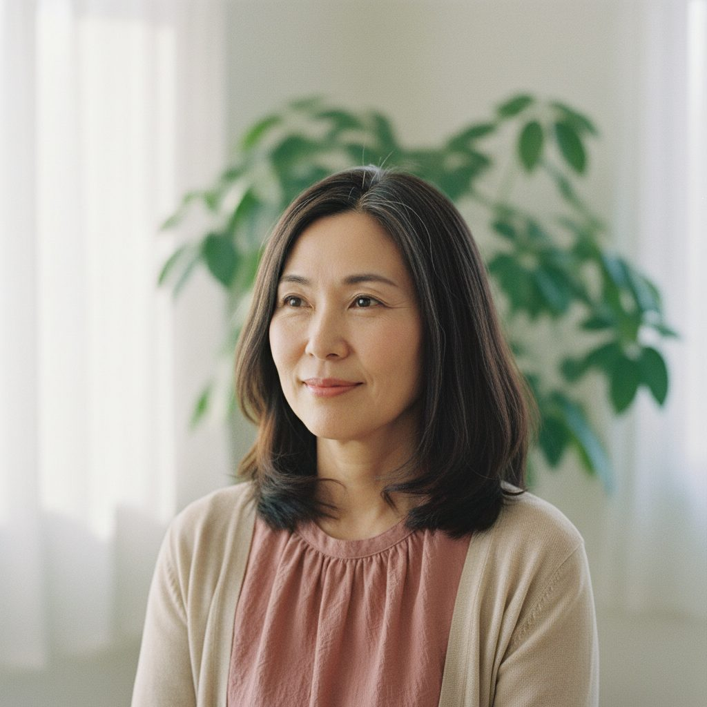

RUNBIRD AI VIDEO — STORYBOARD v5.18（40代統一に確定／モラハラ→生きづらさ／配信エリア＝仙台・オンライン／A案撤去）
仙台オアシスカウンセリングルーム
代表：家山 めぐみ（臨床心理士・公認心理師） ／ 業種：女性専用 心理カウンセリング ／ 動画尺：50秒（YouTube広告）
女性専用
オンライン全国対応
夜間・土日OK
対面：仙台駅近く
臨床心理士・公認心理師
🎬動画構成（50秒）
① OPENING（緑→紫） 緑のオアシスを見上げる → 紫の夜空＋シルエットへ転換／テロップ「もう、一人で悩まないで下さい。」→「誰からも理解されない、孤独。」
② 悩み（紫トーン2シーン） 40代ママと高校生息子の親子関係 → 夫婦関係で萎縮する妻
③ 転換 光が差して緑に戻る
④ 屋号 仙台オアシスカウンセリングルーム
⑤ USP×3 専門的な傾聴（一対一） → コラージュ・絵画療法 → オンライン全国対応
⑥ 自律サポート 同主役の笑顔／「あなたに合ったアプローチで、自律をサポート」
⑦ CTA 公式LINE QR ＋ HP URL
② 悩み（紫トーン2シーン） 40代ママと高校生息子の親子関係 → 夫婦関係で萎縮する妻
③ 転換 光が差して緑に戻る
④ 屋号 仙台オアシスカウンセリングルーム
⑤ USP×3 専門的な傾聴（一対一） → コラージュ・絵画療法 → オンライン全国対応
⑥ 自律サポート 同主役の笑顔／「あなたに合ったアプローチで、自律をサポート」
⑦ CTA 公式LINE QR ＋ HP URL
✅主役の方向性（確定）
家山様5/20返信にて、40代女性で統一 に確定いたしました。子育てシーンの子供も 高校生（10代） に変更済みです。以下「B案＝40代統一」の構成でご確認ください（A案は撤去）。
📋案件概要
📽シーン構成（全11シーン・50秒 ／ OPENING2＋悩み2＋転換1＋屋号1＋USP3＋自律1＋CTA1）

SCENE 01 ／ 0–4s ／ OPENING①（フェリシテHERO①強寄せ・緑見上げ・中央に光）
もう、一人で悩まないで下さい。（焼込済）
…実は一人で、ずっと、悩みを抱えていませんか。

SCENE 01b ／ 4–7s ／ OPENING②（フェリシテHERO②強寄せ・紫の夜空シルエット・テロップ1行短縮版）
誰からも理解されない、孤独。（焼込済・1行に短縮）
（間）誰からも理解されない、と感じる夜も。

SCENE 02 ／ 7–13s ／ PROBLEM① 親子関係（40代ママ＋高校生の息子）
「何をやってもうまくいかない、もやもや感、しんどさ。」
何をやってもうまくいかない、もやもや感、しんどさ。

SCENE 03 ／ 13–19s ／ PROBLEM② 夫婦関係・妻＝40代女性
「言葉にならない思いを、抱えていませんか。」
夫婦・親子関係、落ち込みやすさや生きづらさ。

SCENE 04 ／ 19–24s ／ AFFINITY（紫→緑へ転換・40代女性が光を見る）
（間）
（間）あなたの、言葉にならない思いも、受け止めます。

SCENE 05 ／ 24–28s ／ SOLUTION（屋号登場・実写銘板＋テキスト合成）
仙台オアシスカウンセリングルーム ／ 仙台駅前通 KEARNY PLACE
仙台オアシスカウンセリングルーム。

SCENE 06 ／ 28–37s ／ USP① 専門的な知識に裏打ちされた、丁寧な傾聴（実写ルーム参照×AI合成）
専門的な知識に裏打ちされた、丁寧な傾聴
臨床心理士・公認心理師・精神保健福祉士の資格と経験を持つカウンセラーが、専門的な知識に裏打ちされたご理解で、お気持ちを丁寧にお聴きします。

SCENE 07 ／ 37–41s ／ USP② コラージュ・絵画療法
言葉にならない思いを、形に
言葉になかなかできない時も、コラージュ・絵画療法（芸術療法）も行っております。
SCENE 08 ／ 41–45s ／ USP③ オンラインメイン（40代女性）
オンライン｜夜間・土日対応／仙台＋オンライン
オンライン、夜間も土日も。

SCENE 09 ／ 45–48s ／ MESSAGE（自律サポート・40代女性の回復の笑顔）
あなたに合ったアプローチで、自律をサポート
あなたに合ったアプローチで、お気持ちや考えが整い、ご自身の力で歩めるよう、お手伝いします。

SCENE 10 ／ 48–50s ／ CTA（公式LINE QR＋HP URL 仮置き）
まずは、公式LINEへ／HP：仮URL
まずはお気軽に、公式LINEからご相談ください。
🎙ナレーション全文（v5.6）
実は一人でずっと、悩みを抱えていませんか。 言葉にならない、しんどさ。誰からも理解されない、孤独。 何をやってもうまくいかない、もやもや感。 夫婦・親子関係、落ち込みやすさや生きづらさ。 —— あなたの、言葉にならない思いも、受け止めます。 仙台オアシスカウンセリングルーム。 臨床心理士・公認心理師・精神保健福祉士の資格と経験を持つカウンセラーが、 専門的な知識に裏打ちされたご理解で、お気持ちを丁寧にお聴きします。 言葉になかなかできない時も、コラージュ・絵画療法（芸術療法）も行っております。 オンライン、夜間も土日も。 あなたに合ったアプローチで、お気持ちや考えが整い、ご自身の力で歩めるよう、お手伝いします。 まずはお気軽に、公式LINEからご相談ください。
※ 約260字 ／ 想定発声 46〜50秒 ／ ナレーター = 落ち着いた40代女性声（仮置き） ／ 動画尺50秒
⚠️演出のキモ ＋ NG・審査対策
◎ 演出のキモ
- HOOK 3秒で「女性／悩み／夜」を一発で伝える
- シーン4で必ず「光が差し込む」転換カットを置く
- カウンセラーの顔は正面で見せすぎず、後ろ姿越し傾聴で感情移入
- 芸術療法は手元クローズアップで「ただ話すだけじゃない」差別化
- CTAは LINE一本に絞る（HP/Mapは小さく添える）
⚠ NG・YouTube広告審査対策
- 「治る」「治療」「改善する」は使わない → 「整える」「向き合う」「寄り添う」
- 疾患名（鬱・パニック・PTSD等）はテロップで断定しない
- 夫役の男性はシルエット／後ろ姿／ピンボケ前景に限定（顔の特定回避）
- アニメ・イラスト調NG（実写風で統一）
- 子供のアップ・泣き顔は避ける（広告審査の児童保護）
✅家山様にご確認いただきたいこと
- ① ✅
登場人物方向性→ B案＝40代女性で統一に確定（家山様5/20返信）。子育てシーンの子供も高校生（10代）に変更済 - ② — 泉里香様風から離れたため、本項目は無効化（5/20）
- ③ ✅ 夫の説教シーンの表現 — シーンに反映済みです。家山様にて画像をご確認お願いします
- ④ ✅ SCENE 06 一対一構図 — 来談者の顔OK／カウンセラーは肩から下のみ、で反映済。家山様にて画像をご確認お願いします
- ⑤ 🔧 公式LINE QRコード／HP URL — 家山様よりURLご共有予定。受領後こちらで反映いたします
- ⑥ ❓ ナレーター候補は落ち着いた40代女性声で仮置き中。OKかご確認お願いします
- ⑦ ✅ BGM「リラクゼーション会社の曲」 — 家山様5/20「直感でよい」のご返答。こちらで雰囲気の近い癒し系BGMを選定いたします
- ⑧ ✅ コラージュ作品サンプル — 家山様5/20「提出済み」のご返答
- ⑨ ✅
対人援助向けアプローチ→ 不要（家山様5/20） - ⑩ ✅
料金表記→ 不要（家山様5/20）